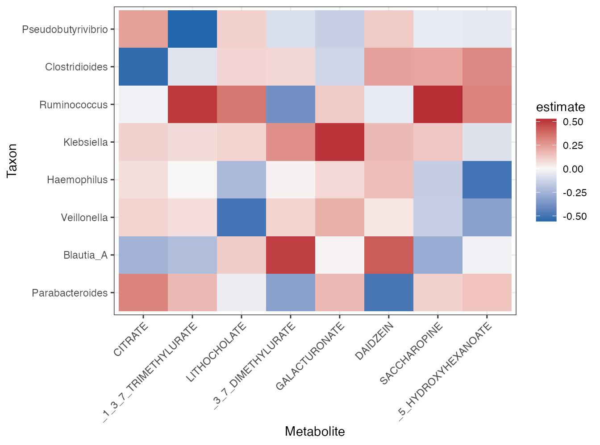
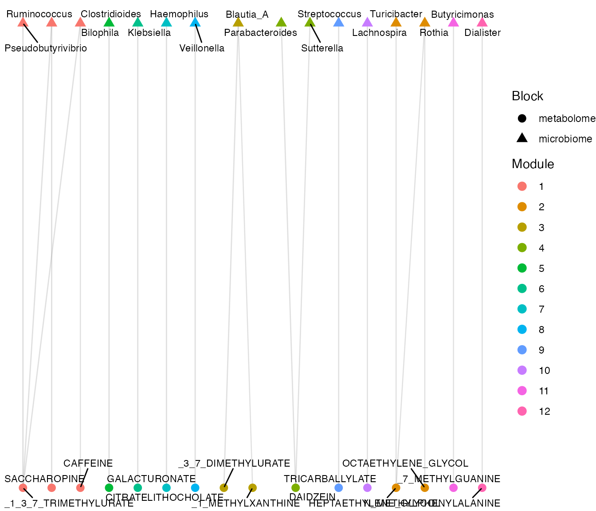
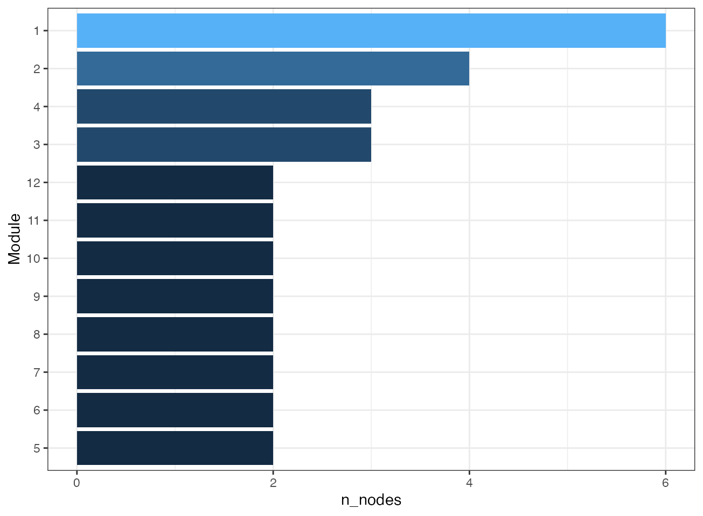
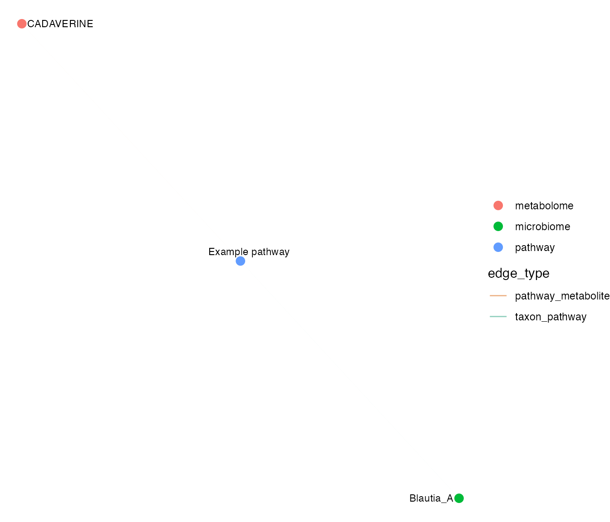
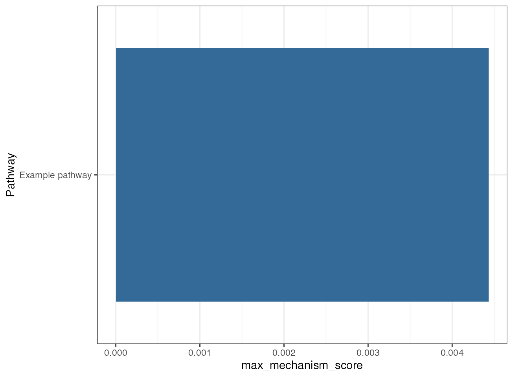
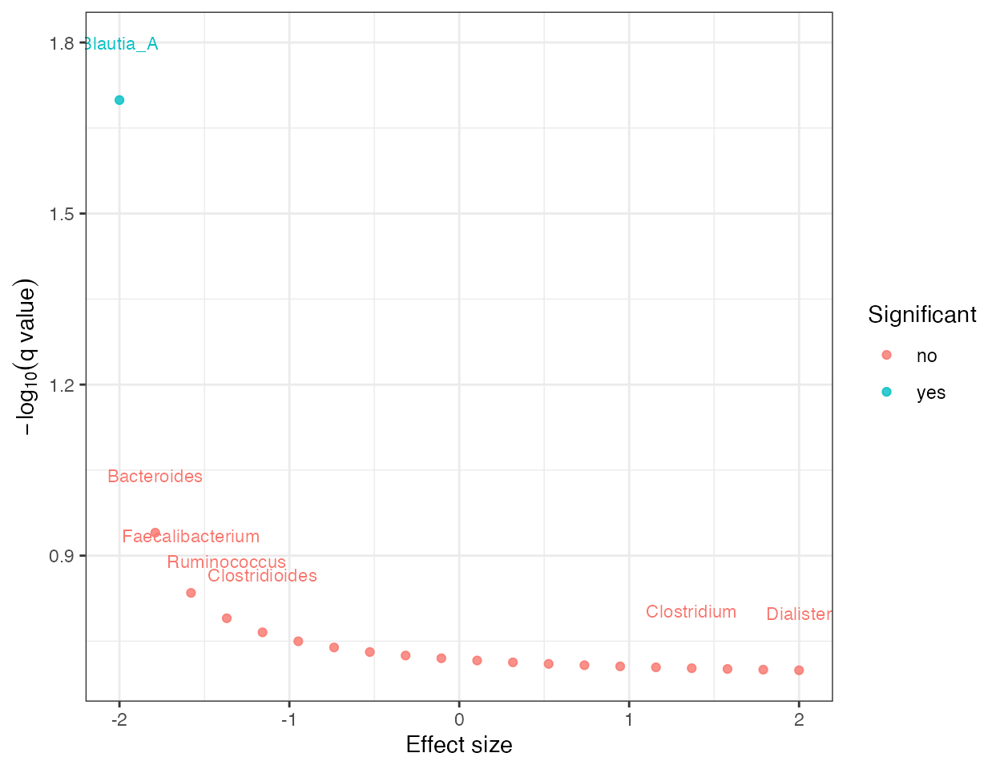
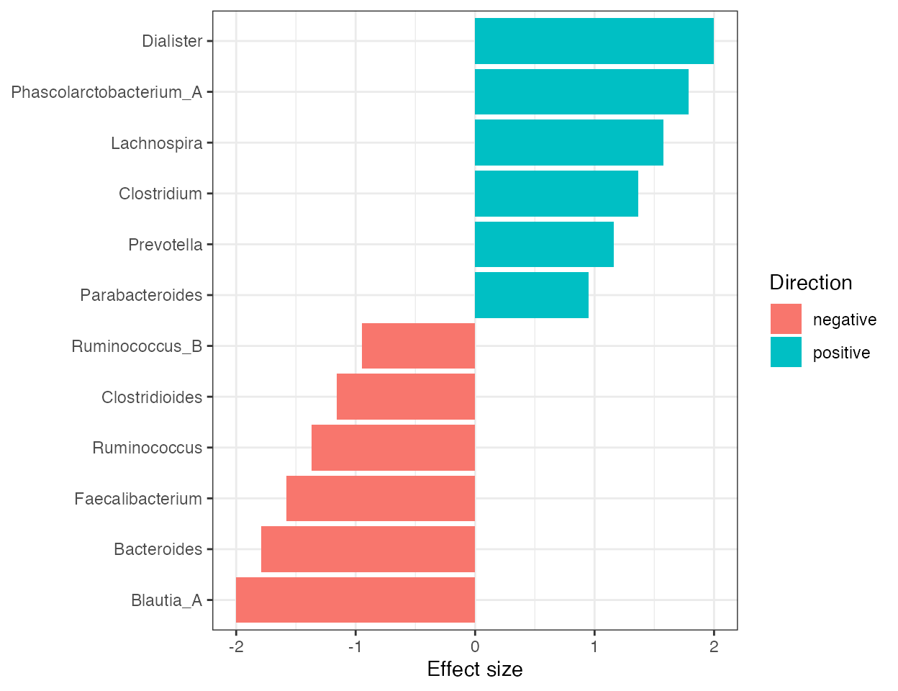
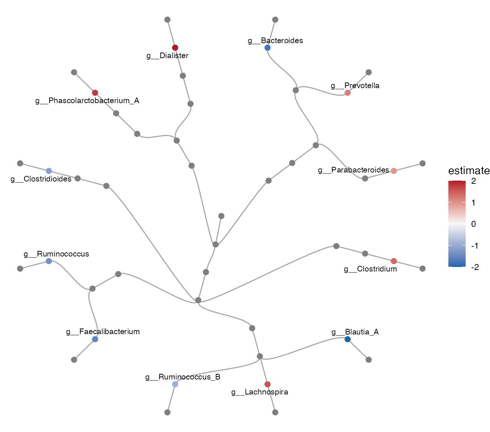

Cross-Omics Visualization
Xiaotao Shen xiaotao.shen@outlook.com
2026-03-04
Source:vignettes/visualization_crossomics.Rmd
visualization_crossomics.RmdThis article collects visualization helpers for correlation, network,
mechanism, and differential-abundance result objects. These functions
build on top of paired microbiome_dataset and
mass_dataset inputs but plot standardized result
classes.
library(microbiomedataset)
data("demo_crossomics", package = "microbiomedataset")
microbiome_object <- demo_crossomics$microbiome_data
metabolome_object <- demo_crossomics$metabolome_data
sample_link <- demo_crossomics$sample_link
correlation <- calculate_correlation(
microbiome_data = microbiome_object,
metabolome_data = metabolome_object,
sample_link = sample_link,
microbiome_rank = "Genus",
metabolome_transform = "none"
)
correlation_network <- build_correlation_network(
correlation,
min_abs_correlation = 0.2,
max_q_value = 1,
top_n = 20
)Correlation and modules
plot_correlation_heatmap(correlation, top_n_taxa = 8, top_n_metabolites = 8)
plot_network_modules(correlation_network)
plot_module_summary(correlation_network)
Mechanism summaries
genus_object <- summarise_taxa(microbiome_object, taxonomic_rank = "Genus")
pathway_link <- standardize_pathway_link(
data.frame(
taxon_id = genus_object@variable_info$variable_id[1],
metabolite_id = metabolome_object@annotation_table$variable_id[1],
pathway_id = "example_pathway",
pathway_name = "Example pathway",
stringsAsFactors = FALSE
)
)
mechanism <- infer_metabolic_link(
microbiome_data = microbiome_object,
metabolome_data = metabolome_object,
sample_link = sample_link,
pathway_link = pathway_link,
association_result = correlation,
microbiome_rank = "Genus",
q_value_cutoff = 1
)
plot_mechanism_network(mechanism, top_n = 10)
plot_pathway_summary(mechanism, top_n = 10)
Differential abundance result views
da_table <- genus_object@variable_info[1:20, c("variable_id", "Kingdom", "Phylum", "Class", "Order", "Family", "Genus"), drop = FALSE]
da_table$estimate <- seq(-2, 2, length.out = nrow(da_table))
da_table$p_value <- seq(0.001, 0.2, length.out = nrow(da_table))
da_table$q_value <- p.adjust(da_table$p_value, method = "BH")
da_result <- create_differential_abundance_result(
result = da_table,
method = "external_demo",
taxonomic_rank = "Genus",
group = "group_1_vs_group_0"
)
plot_differential_volcano(da_result)
plot_differential_effect_size(da_result, top_n = 12)
plot_differential_cladogram(da_result, top_n = 12)
da_ancombc <- run_differential_abundance(
object = prune_taxa(microbiome_object, variable_id = microbiome_object@variable_info$variable_id[1:40]),
formula = "study_group",
method = "ancombc",
taxonomic_rank = "Genus"
)
da_ancombc
#> differential_abundance_result
#> Method: ancombc
#> Taxonomic rank: Genus
#> Group: study_group1
#> Rows: 40These result-focused plots sit on top of standardized result classes, so the same plotting API can be reused for external results and native workflows. For interactive tree panels, pathway enrichment views, and longitudinal mixed-effect result plots, see the advanced visualization article.